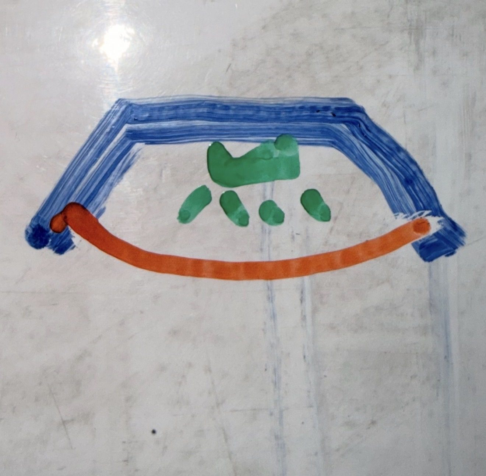
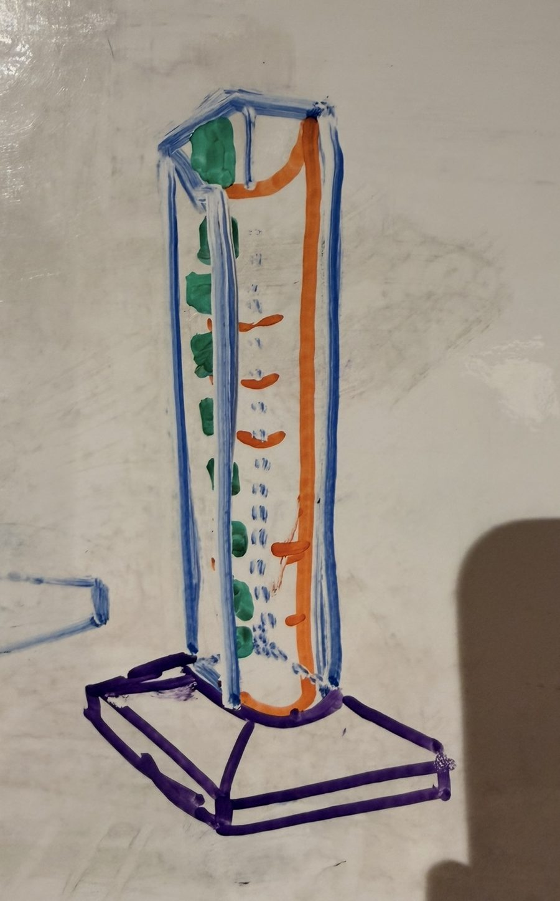
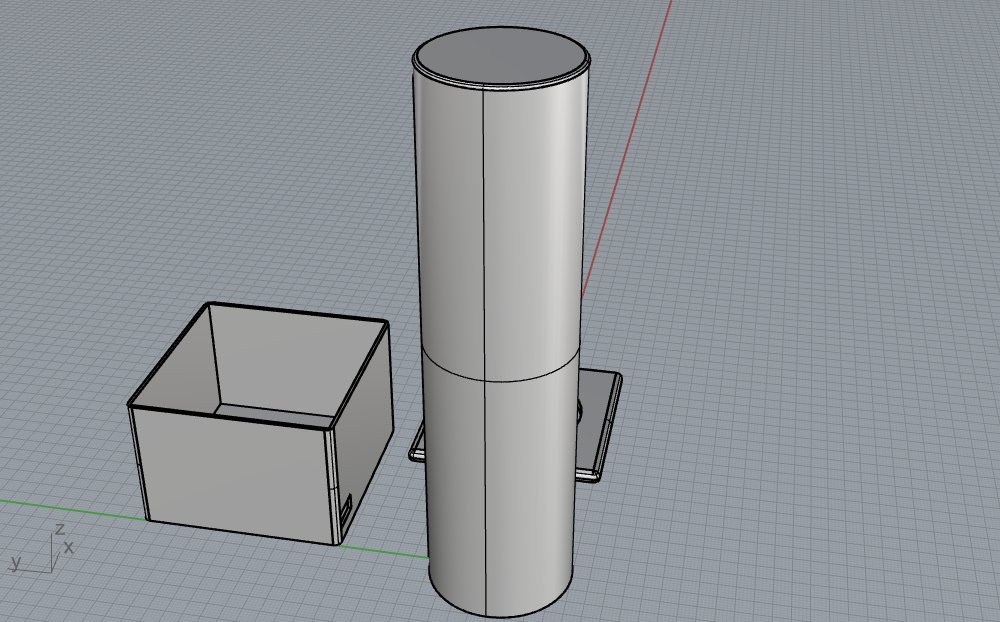
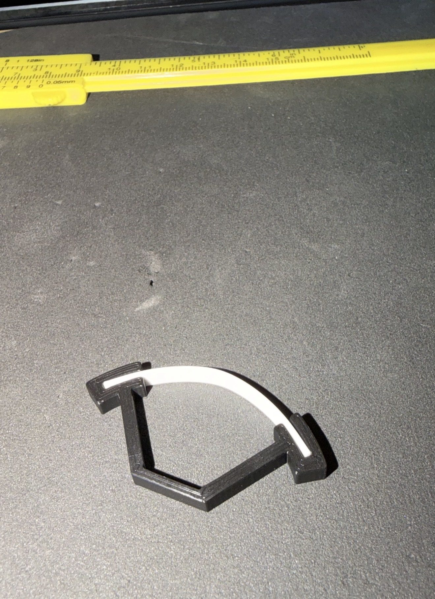
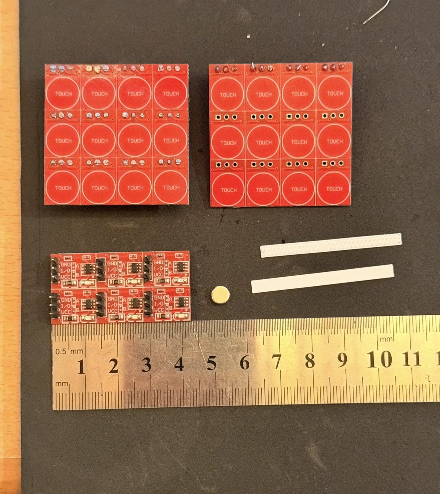
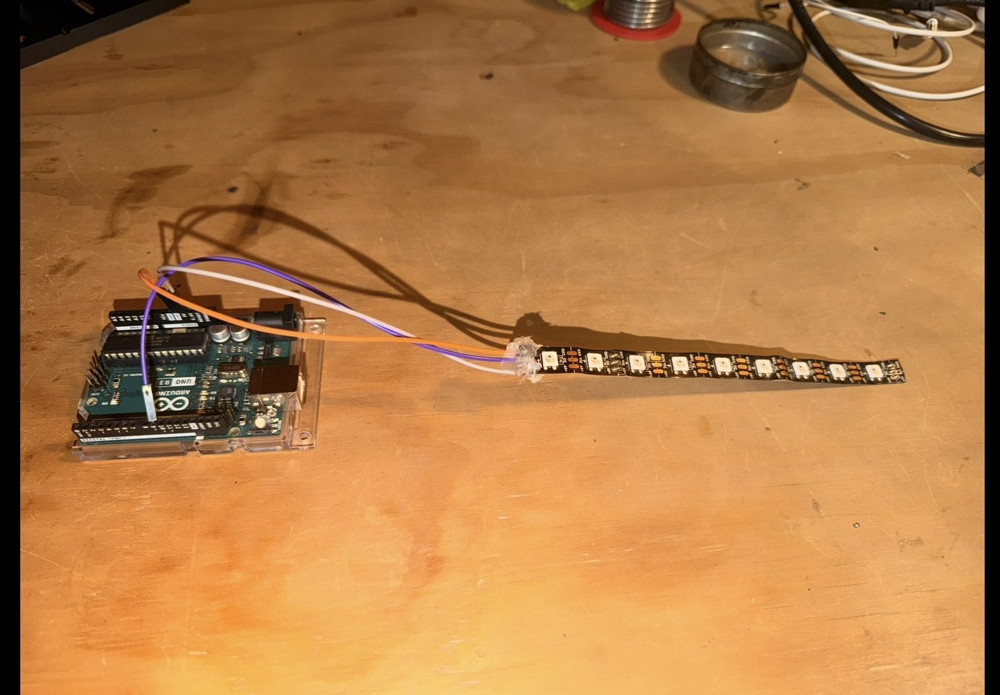
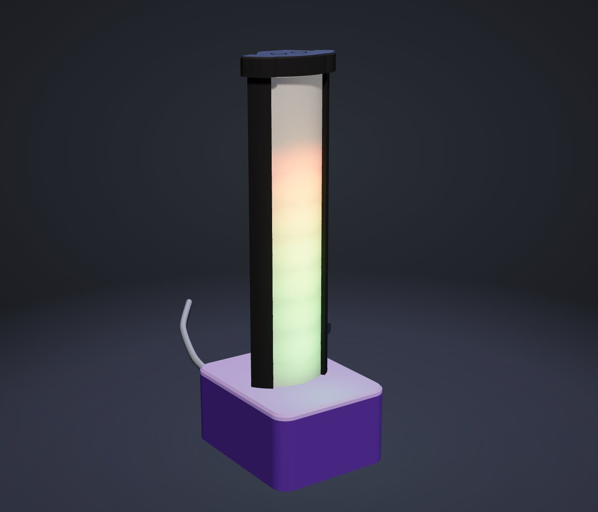
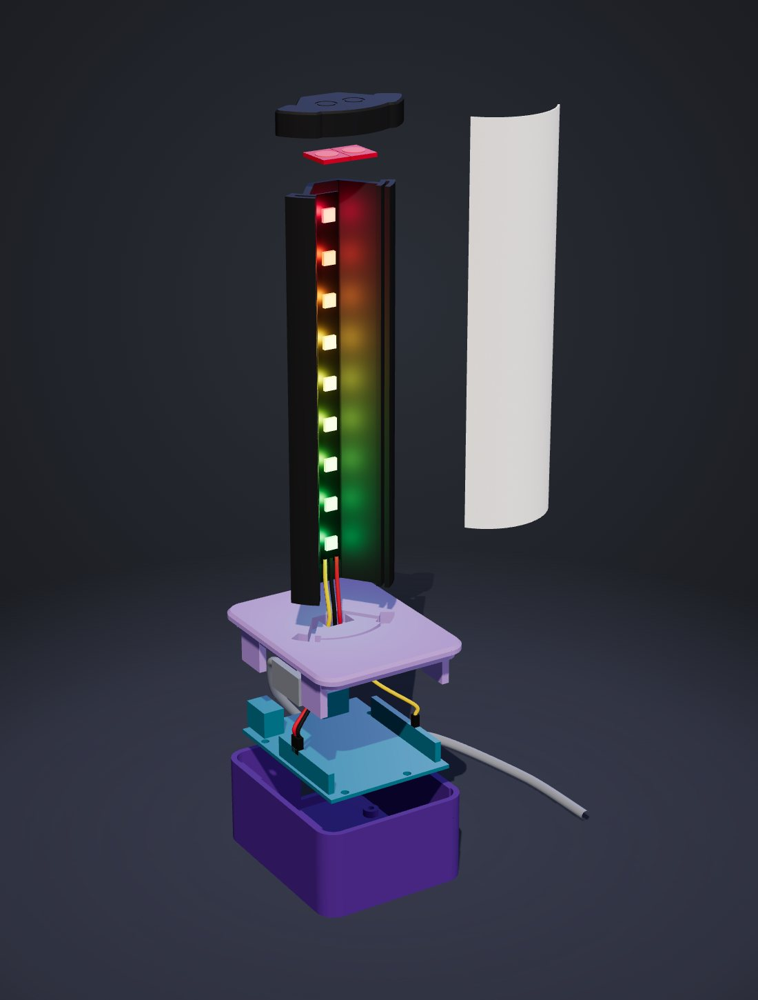

Taller de Interfaces · UAI · 2026
Una torre de 9 LEDs que escucha el audio del computador y lo convierte en luz. El navegador analiza el sonido, el Arduino enciende los LEDs y una lámina impresa en 3D difumina la luz.
EQUIPOJosé · Pedro Claro · J. Domingo Pastorino

Boceto en planta
Boceto de la torre
Prototipo 1 · RhinoEl primer prototipo, en Rhino, era una torre cilíndrica sobre una caja. Se cambió a una planta de trapecio: la tira plana se pega en la pared trasera y la lámina blanca, impresa plana, se curva y engancha en ranuras.

Prueba de encaje
Módulos touch
Uno + tira de 9 LEDsTorre cilíndrica y caja: sirvió para fijar alturas y proporciones.
Planta en trapecio. Se descartó el neón de 12 V: la tira WS2812B funciona con el USB.
Torre de 79 × 42 a 46 × 22 mm, del ancho de la tira.
Un corte de la torre confirmó que la lámina se curva y engancha.
Labio con 0,15 mm de juego; ranuras para imanes.
Tapa superior con 2 sensores TTP223 y Uno atornillado.
Una placa, PLA a 0,16 mm, sin soportes, en una noche.

Lámpara armada| Desde | Hacia |
|---|---|
| Tira 5V · GND | Uno 5V · GND |
| Tira DIN | D6 (opcional 330 Ω) |
| Touch 1 · 2 (I/O) | D7 · D8 |
| Touch VCC · GND | 5V del ICSP (o 3.3V) · GND |

Despiece| Música | App web: vúmetro, espectro, pulso, fuego, ola, chispas |
| Lámpara | Sin computador: arcoíris, respiración, fuego, luz cálida |
| Claude | Ámbar si espera tu respuesta, azul trabajando, verde listo |
| Touch | Toque, doble toque, mantener y los dos juntos |
Pruébala:
bigkokoz.github.io/lampara/app.html
Chrome o Edge · también funciona como simulador.